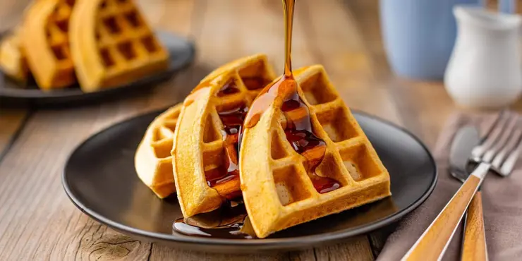

Receta para hacer los mejores Waffles de tu vida !
¿Dónde se originaron los waffles?
El waffle tiene su origen en Europa, específicamente en Bélgica, donde se popularizó a partir del siglo XII. La palabra "waffle" proviene del término francés "walfre", que significa panal de abejas, ya que los primeros waffles se parecían a este tipo de panal. Y ahora sin mas preambulos vamos a preparar unos deliciosos waffles!
- 1/2 taza de harina leudante
- 1/2 taza de harina integral
- 1/4 taza de manteca derretida
- 1 huevo
- 1 cdita sal
- 3/4 taza leche
- endulzante a gusto (o 1 cda de azúcar)

- Para la masa de waffles dulces En un bol vamos a poner la harina integral junto con la harina leudante. Agregamos una cucharadita de sal y también el endulzante o el azúcar dependiendo lo que prefieran usar. Mexclamos incorporando bien todos nuestros polvos.
- A esto, vamos a agregar un huevo y la mitad de la cantidad total de la leche. También agregamos un chorrito de esencia de vainilla le dará un sabor especial a éstos waffles dulces. Mezclamos hasta que todo esté bien incorporado.
- Una vez que esté incorporado, vamos a ir incorporando de a chorritos el resto de la leche, mezclando hasta incorporar entre chorrito y chorrito. Sólo nos queda agregar la manteca derretica y una vez que esté bien mezclado todo, lo vamos a llevar a la heladera por media hora para que se hidrate bien la harina y quede bien espesa la mezcla.
- Pasado este tiempo, vamos a retirar la mezcla de la heladera y vamos a preparar nuestra wafflera (o en su defecto, una sartén al fuego, no quedan con la forma de waffle pero se hacen perfectamente.) Vamos a echar rocío vegetal o un pedacito de manteca para que se derrita y luego, encima echamos la mezcla. Cerramos la wafflera y esperamos unos segundos que se cocinen. Si están utilizando sartén, cuestión de hacer vuelta y vuelta.
- Sólo queda, entonces, sacar los waffles cuando estén hechos y tirarles por encima una rica mermelada.